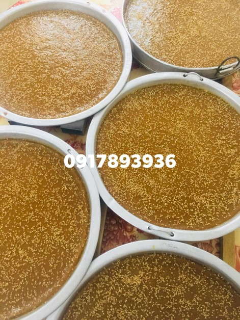
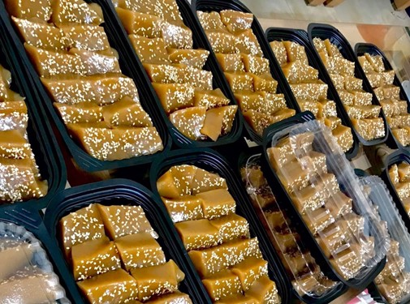
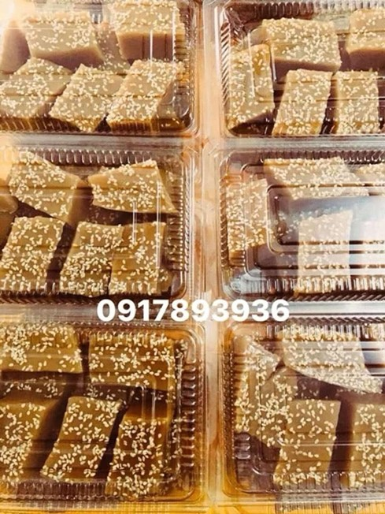

Bánh mật
Bánh mật hay còn gọi là "thàng cao". Trong tiếng Nùng, "thàng cao" cũng có nghĩa là bánh đường (bánh mật) vì nguyên liệu chính để làm bánh chủ yếu là đường đỏ - một trong những sản phẩm thủ công được làm từ cây mía. Bánh mật với hương vị ngọt thanh rất riêng là thức quà quê khó quên của người Nùng ở Cao Bằng. Đây là món bánh bình dị nhưng độc đáo nếu có dịp ghé thăm Cao Bằng thì không nên bỏ lỡ.
Bánh mật được làm bằng bột gạo nếp, được đệm bằng một lớp lá chuối hoặc lá dong để khi hấp chín bánh sẽ không dính khuôn; bánh mật không có nhân. Bánh có công đoạn làm gần giống với bánh gai, chỉ khác là không có nhân và bột chỉ được trộn với đường đỏ. Bánh có hương vị đậm đà, ngọt, bùi, dẻo, có thể ăn no mà không thấy ngán.
Bánh mật thành phẩm là chiếc bánh có màu đỏ và vị ngọt thanh của đường mía, bùi của vừng và dẻo của bột gạo nếp. Bánh mật thường được bày bán nhiều tại các phiên chợ vùng cao của các huyện miền Đông như: Quảng Uyên, Trùng Khánh, Phục Hòa, Hạ Lang...
Công đoạn để tạo ra một chiếc bánh mật rất tỉ mỉ. Gạo nếp sau khi được xát thành bột sẽ được để khô, bớt nước. Khi đã có bột gạo nếp thì trộn bột với đường đỏ rồi nhào nặn đều tay cho đến khi bột và đường quyện lại với nhau. Phần đường bao giờ cũng gấp đôi phần bột để bánh có vị ngọt thanh. Sau đó đổ phần bột đã trộn vào khuôn sẵn, rồi đặt lên chõ hấp cách thủy như đồ xôi.
Khoảng 30 - 60 phút thì mang bánh ra, rắc thêm vừng trắng lên khuôn bánh để tăng tính thẩm mĩ và vị ngọt bùi. Tuy bánh không có nhân nhưng càng nhai càng cảm nhận được vị thơm, ngọt, dẻo, bùi.
Bánh mật là thức quà quê bình dị được nhiều người ưa thích. Bánh mật gắn liền với tuổi thơ của nhiều người, nhất là đồng bào dân tộc Nùng đang sinh sống tại Cao Bằng.